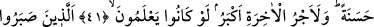
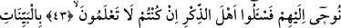
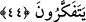

BİLENLERE SORUN
41. Zulme uğradıktan sonra Allah yolunda hicret edenlere gelince, onları dünyâda
güzel bir şekilde yerleştireceğiz. Eğer bilirlerse âhiretin mükâfatı elbette daha
büyüktür.
42. (Onlar) sâdece Rablerine tevekkül ederek sabredenlerdir.
43. Senden önce de, kendilerine vahyettiğimiz kişilerden başkasını peygamber
olarak göndermedik. Eğer bilmiyorsanız, bilenlere sorun.
44. Apaçık mucizeler ve kitaplarla (gönderildiler). İnsanlara, kendilerine
indirileni açıklaman için ve düşünüp anlasınlar diye sana da bu Kur’an’ı indirdik.
“Zulme uğradıktan sonra Allah yolunda” Allah yolunda hicret edenler. Allah için,
O’nun rızası ve hakkı uğrunda, O’na tâat imkânı bulabilmek için “hicret edenlere
gelince” Onlar Mekke’de zulme uğrayan Rasûlullah (s.a.)’in ashabından olan
kimselerdir. Mekkeliler tarafından memleketlerinden çıkarılınca önce Habeşistan’a,
sonra da Medine’ye hicret ettiler ve böylece iki hicreti de yaptılar. İşte âyette
kasdedilen bütün muhacirler değil bu muhacirlerdir. Çünkü sûre Mekkîdir.
Rivâyet edilmiştir ki Rasûlullah (s.a.), Kureyş kâfirlerinin devamlı eziyetlerinden
dolayı müslümanların başına gelen sıkıntıyı görünce onlara şöyle demişti: “Yeryüzüne
dağılın! Allah sizi toplayacak.” Onlar: “Nereye gidelim?” diye sordular Rasûlullah
(s.a.) de: “Habeşistan diyarına gidin. Orada, yanında zulme uğramayan büyük bir
melik vardır; orası doğruluk diyârıdır. Ta ki Allah içinde bulunduğunuz bu durumdan
size bir ferahlık versin.” buyurdu.[147]
Bir rivâyete göre seksenin üstünde sahabî, dinleri uğrunda Allah için fitne korkusuyla
Habeşistan’a hicret etmiştir. Bazıları âilesiyle birlikte hicret etti. Osman b. Affan
(r.a.), zevcesi Peygamber (s.a.)’in kızı Rukiyye ile birlikte ilk Mekke’den çıkan sahabî
idi. Diğer bir kısmı da yalnız başına hicret etti.
Bir hadiste şöyle buyrulmuştur: “Kim dîni için bir karış bile olsa bir yerden diğer